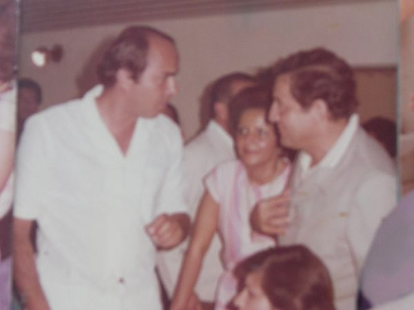
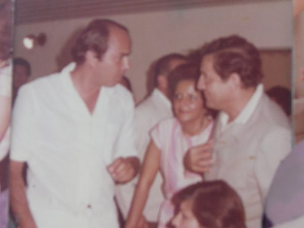

Getulio Vargas Barón
El hombre que parecia un ventarrón
 

Imagenes donde se le puede observar...
BIOGRAFÍA
SEMBLANZA DE UN LLANERO.
Nació en Támara Casanare, un bello pueblito colonial como el lo decía, el 05 de Marzo de 1933, en el hogar formado por don Arquímedes Vargas Abril y doña Natalia Barón Cely, cuyo matrimonio nacieron Victoria, Ofelia, Cornelia, Stella, Myriam, Getulio y Yesid.
Su padre, trabajador incansable de fuerte temperamento, educó a su hijo por ser el mayor de los hombres, bajo un régimen estricto, obligándolo a ser hombre de verdad porque esa era la concepción en el llano para los varones, a trabajar y adquirir responsabilidades desde muy joven, a no temerle a nada ni a nadie, como era el sentir de los llaneros bravos.
Creo que esa formación hizo de Getulio el hombre altivo, osado y bravío, fiel espécimen de la raza de las pampas colombianas, los cuales como todo, ha ido desapareciendo con el correr de los tiempos.
Estudió su primaria en Támara con las hermanas Agustinas, para luego ser enviado a la capital de la República al colegio salesiano donde curso algunos años de bachillerato. Suspendió sus estudios a raíz de la violencia que vivió el país en 1949. Regresó a su llano pasada la violencia y al fallecimiento de su padre junto con su señora madre y sus hermanas bajaron a la sabana y como era tradición, se dedicaron en la Reserva al levante y engorde de ganado; fue entonces con el trabajo del llano y bajo las ordenes de doña Natalia, que se empezó a vislumbrar el hombre rudo, con una fuerza diría yo, casi descomunal, el llanero que montaba potros cerreros, toreaba coleaba y era capaz de tumbar un toro cogido por los cachos, en otras palabras el cimarrón a quien más tarde, Eduardo Mantilla Trejos llamaría “el hombre que parecía un ventarrón”.
Dice el Maestro Mantilla Trejos en la Revista Horizonte, edición 40 de Abril de 2000:
“Getulio Vargas Barón- Semblanza de un llanero”.
“La muerte de Getulio Vargas Barón suscita entre los que lo apreciamos diversas reflexiones, una de las cuales es puntual en afirmar que los Llanos de Colombia – y particularmente Casanare – asistieron al eclipsamiento definitivo de los hombrones, una especie humana que se caracterizó, como don Segundo Sombra por tener alta la frente, cuerudas las manos y entretejido en sus raigambres un estricto sentido del deber y la justicia. A quienes no tuvieron el honor de conocerlo, vamos a decirles que Getulio fue un hombre parecido a un ventarrón; conoció como nadie los entresijos de su tierra y contribuyó a cincelar la personalidad del pueblo llanero, tan desdibujada en los últimos tiempos”.
Los Vargas en Casanare
El llano casanareño siempre sintió el lomo la presencia viva de los Vargas. El primero, don Gaspar, enfebrecido el Amazonas con el mítico Orellana y Francisco de Vargas, el de la barba taheña, bajó de los andes y ayudó a fundar con sus manos, en las cabeceras del Cusiana, la orgullosa capital de Santiago de las Atalayas en cuyos obrajes sucumbió la raza Achagua. El hijo de don Francisco Adrian, fue gobernador de los llanos y encomendero principal por título que le expidió la corona en 1628.
En ese orden de ideas, no es de campo de concentración de civiles que urdió el gobierno para enfrentar con ventajas a las guerrillas liberales comandadas por Guadalupe Salcedo. Al terminar el conflicto, Getulio conoció el acicate de la pobreza y encabezó la legión de casanareños que en un nuevo memorial de Agravios exigió al Frente Nacional la autonomía del pueblo más libertario de Colombia.
Hombre de caballo, conocedor de los pasos de los ríos y los caminos veraneros, el hombrón fustigó la timidez de sus paisanos y llegó con su palabra al recinto de la Asamblea de Boyacá. Allá grito que el llanero no se siente integrado a la nacionalidad y exigió la devolución de la autonomía. Fue designado Alcalde, prefecto del territorio casanareño, gerente del Fondo Ganadero, Notario y Representante a la Cámara. Bajo el gobierno de su amigo López Michelsen, Getulio consiguió ver elevado el territorio casanareño al rango de Intendencia Nacional, y en el de Turbay Ayala aceptó la responsabilidad de conducir sus destinos. Luego de un gobierno de dos años y de procurar la construcción de vías, por medios a su alcance, Getulio se retiró de la administración y se halló frente a una realidad incontrastable: no podía establecerse de manera definitiva en Yopal porque carecía de vivienda propia. La alcaldía de esta capital le adjudicó un lote y uniendo sus esfuerzos a los de Magnolia su bella esposa, Getulio construyó una digna casa con el crédito que le hizo una entidad bancaria.
El intelectual
Una vez estabilizado, el hombrón se metió en otra deuda y bajo la guía de los expertos del diario El Tiempo, adquirió de contado en los distintos fondos editoriales del país y del extranjero, una de las bibliotecas de cultura general mejor pensadas del país. Al mismo tiempo inició la publicación de un quincenario titulado Mastranto para defender desde sus páginas los intereses de los más humildes. No era raro ver entonces llegar a la casa de Getulio, a mañana y tarde, romerías de defenestrados que solicitaban el contacto con la autoridad o la mediación ante el poderoso para preservar un ojo de agua o la integridad del alcornocal.
Hablando menos y haciendo cada vez más genuflexiones a un moderno computador, Getulio nos sorprendió un día con el libro Cuentos, Mitos y Leyendas del llano publicado en 1996 y saludado por la crítica especializada como una revelación por la hermosura de los temas y la originalidad del estilo que combina en dosis equilibradas la realidad y la ficción. Al siguiente año, vimos aparecer la obra histórica Marroquín, el Morro, Génesis de la ciudad de Yopal, documento verás y oportuno que llegó en momentos en que la capital de Casanare entraba de lleno en la era del petróleo, con gigantes aeronaves surcando sus cielos y grandes barrenos perforando los hondos socavones de la tierra.
Herido ya en salud, vimos aparecer hacia 1999 el Canto de mi pueblo, un libro testimonial que recoge las andanzas vitales y los gritos libertarios del último hombrón de Casanare. Del hombre que parecía un ventarrón!
Paz en su tumba!...”
Eduardo Mantilla Trejos
También el poeta colombiano, Pedro Manuel Rincón, Pemam, al prologar el libro Cuentos Mitos y Leyendas del llano, escribió:
“UN LIBRO PARA APRENDER A SENTIR”
“no tengo la pretensión de hacer la biografía de quien el llano conoce y reconoce por la talla de su vida, la intensidad de la devoción por el terruño y la entrañable sensibilidad de la que es dueño. Toda la región sabe de sus ejecutorias en pro de la comarca y el esfuerzo material y físico para que los valores humanos y geográficos del llano sean en verdad, el símbolo de una patria mejor. Son sus coterráneos los que tienen en la memoria el perfil de Getulio Vargas, quien detrás de su timidez orgullosamente cultivada, guarda toda la fuerza necesaria para firmar como administrador, como poeta, como líder, como investigador, los inmensos valores del embrujador territorio llanero. Dice la sabiduría popular que “las cosas se parecen a su dueño”, y a fe que en lo que corresponde a este libro, sus textos no pueden parecerse más a Getulio Vargas, su autor, y digo más: el libro de Getulio Vargas Barón es idéntico a los temas que trata, las tierras por donde discurre, el alma de sus protagonistas intemporales. Y no podría ser de otra manera, porque el escrito de estos “Cuentos, Mitos y Leyendas del Llano”, son sangre y espíritu del paraje, carnal inseparable de los usos, las costumbres, paisaje y la magia de las sabanas llaneras: desde las riveras del rio Arauca hasta el borde selvático del sur, desde el Orinoco rugiente hasta el piedemonte que referencia al resto de la patria.
La autenticidad de Getulio Vargas es la razón de ser las constantes entre el escrito y su autor; por las mismas razones sus textos son “verdaderos”, en el sentido más sensible del vocablo, y genuinamente hermosos porque con la autenticidad desentrañan la inagotable belleza del terruño, la aventura de sus hombres y el tamaño de sus sueños, autenticidad y belleza apuntaladas a mitad del corazón de un soñador de cosas amables que pendulan como los morichales al compás del viento, entre la historia, la leyenda la cotidianidad y la sabiduría; idéntico al llanero que como que más, resulta inseparable su entorno, pues este paisaje generoso hasta en sus horizontes, es el escenario de todos sus amaneceres, con el fin de que transiten por su anchura, gentes de épica leyenda, empresarios de faenas rudas.
Así como Alfonso Quijano, el Bueno, es andante de Motiel, Getulio es caballero de sus llanos; cruza por sus recodos históricos para apuntar con precisión aquellas historias de la patria que comienza en la llanura. Recorre las remotas instancias de su leyenda, para recrearla en el ímpetu de la sangre caramente comprometida con el rumor de los antepasados. Recobra para la luz, todas las vibraciones de su terruño y el rumor de la música que tiene que tiene el hermoso frenesí de los potros; recoge el silencio del hombre llanero en sus faenas, el sabio proverbio de su dialecto usual y la mágica filosofía de sus abuelos, para enriquecer con todo aquello, un libro que una vez abierto, no puede cerrarse sin haberse terminado, sobre todo, si uno se topa en la lectura con una narración como “El Toro Negro Patorreal”, tema que personalmente hubiera preferido para bautizar el libro.
“Cuentos, Mitos y Leyendas del Llano”, está destinado a ser el abrevedero de todos cuantos quieran asomarse a la llanura por medio de una libertadora auténtica, como la que escribe Getulio Vargas Barón. Pedro Manuel Rincón – Pemán-R, Yopal, Septiembre de 1996”.
Otro amigo y con tertulio escribió:
“Soneto para Getulio Vargas:
Legendario cabresteros de versos,
Audaz jinete de potros cerreros,
Rompevientos de llanos inmensos,
Estafeta de los sueños llaneros.
Ayer montaste caballos salvajes,
Galopaste en amores furtivos,
Retaste al llano con actos audaces
Y jugaste al azar tus amoríos.
Hoy alegre compartes remembranzas,
Legas al mundo parte de la historia
Y defiendes tu llano a ultranza.
Bardo criollo de tierra promisoria
Que atas al botalón la esperanza
En faenas de paz para la gloria
Oscar de Jesús Hincapié Sierra – Yopal Noviembre 17 de 1999”.
Y así podría citar muchas expresiones de gentes que lo apreciaban y admiraban, como las palabras que le dijo una vez el ingeniero Julio Pineda (q.e.p.d.) cuando Getulio declamaba unos versos:
“Getulio lo mejor que se había escrito del llano eran los poemas de José Eustacio Rivera, pero conociendo los suyos, lo han dejado de ser, cada uno de ellos conforma una conjugación de palabras que forman una policromía maravillosa para cantarle a su llano. El maestro infortunadamente es más conocido fuera de Casanare, al fin y al cabo, nadie es profeta en su tierra”.
Recuerdo que este comentario hizo que a Getulio se le escurrieran las lágrimas, al fin y al cabo era rudo pero sensible.
El periódico Llano Siete Días, lo menciona como uno de los 10 hombres del siglo pasado, en la Orinoquía Colombiana.
Y así, podría citar muchos amigos Boyacá y políticos del Gobierno Nacional, que en su época admiraron a Getulio por su valentía y coraje para defender a su Casanare.
Lo curioso es que las palabras de elogio y exaltaciones a sus escritos y su modo de obrar, siempre provinieron de personajes de afuera, que apreciaban en su justo valor lo que Getulio hizo por su tierra.
Getulio era romántico, soñador enamorado como nadie de su idílico llano, amigo de sus amigos, leal a sus creencias en las causas políticas, que creía le convenían al país y por su puesto al llano; con una franqueza casi atrevida, acostumbrado a mandar, explotaba pero bajaba su furia como se baja la espuma, y reconocía sus faltas a pesar de su terquedad.
Conoció el llano en toda su dimensión, todos sus vericuetos, caminador, siguiendo el andar de la luna recorría la sabana, atravesaba nadando ríos crecidos, cazador, pescador y por supuesto enamorado como el Juan Charrasqueado de esta llanura. Parrandero, jugador de gallos, jinete diestro montaba sendos caballos y cuentan los que le conocieron por esos años, que era imponente la estampa de don Getulio cuando cabalgaba en hermosos ejemplares vestido casi siempre de blanco y con revólver al cinto; dejó huellas marcadas de Arauca a Villavicencio, camino ganadero que obligatoriamente se hacía para sacar los ganados a la capital.
Fueron muchos años de trabajo duro combinados con la parranda, el trago, mujeres bonitas, y peleas que no faltaban, alardeando de ser el hombre bien plantado, forzudo y con manos maltadas, recorriendo la sabana en toda su inmensidad. Ya entonces se avizoraba en el carácter recio de este llanero, un hálito de rebeldía por la independencia político administrativa del Departamento de Boyacá, inconforme con el olvido del Gobierno Central para con su tierra. Fueron muchos de sus grandes amigos quienes lo alentaron para ir a la Asamblea de Boyacá. Como fuera de los trabajos del llano no era mucha su educación, resolvió prepararse para tal fin, y se dedicó a leer para el gran reto que le esperaba en las lides políticas.
Pero no solamente se preparó para desempeñarse como diputado a la Asamblea, ni a estudiar las leyes de Colombia, fue más allá y sus ansias de conocimiento lo llevaron a incursionar en la vida de los grandes políticos y pensadores griegos y romanos, Cicerón, Sócrates, Temístocles y por supuesto el libertador y el general Santander a quien admiraba profundamente, por citar algunos fueron tomos con los que empezó a formar su biblioteca, al igual que la vida de grandes filósofos, literatos y cultura en general.
Lector incansable, devorador de libros y con una memoria prodigiosa, sus ansias de conocimiento lo llevaron a ser una autoridad en mitología griega, egipcias y todas las historias fabulosas de los dioses, semidioses y héroes de la antigüedad, tanto que cuando escribió su libro Cuentos, Mitos y Leyendas del Llano, creó su propia mitología ajustada a las creencias y leyendas de su tierra. Pero a pesar de su carácter fuerte, en el fondo era tímido para dar a conocer lo que escribía, sus poemas donde le cantaba a su tierra, sólo los declamaba en reuniones familiares y con sus amigos muy allegados. Sin embargo siempre le insistí e induje a que escribiera porque me parecía que era mucho lo que podía aportar para la historia de su pueblo. En repetidas ocasiones fui invitado a participar en simposios de historia, pero se limitaba a dar información y hablar del tema pero sin ningún tipo de publicidad. Alguna vez sonolux le envió un contrato pidiendo autorización para grabar sus poemas pero se negó rotundamente.
Y así entre libros quemados por las velas y los cigarrillos, los trabajos de llano, sus maridos y parrandas, sueños y proyectos fue transcurriendo el tiempo, hasta que motivado por sus amigos, el papi Tarquino, Pedro Luis Pérez, Carlos Tarquino y algunos otros aceptó ser alcalde de Paz de Ariporo desde Diciembre de 1963 a 1965; luego fue administrador de Aduanas en Arauca; Diputado a la Asamblea de Boyacá para el periodo de 1966 a 1968, pues la elección era sólo de dos años, y aunque llegó con mucho ímpetu, se dio cuenta que aún no estaba listo para competir con experimentados políticos, según sus propias palabras, hecho este que le causó alguna desilusión, pero fue pasajera, por cuanto con más ahínco se preparó para en 1972 volver a ocupar una curul en la Duma Boyacense, y así enfrentar a avezados contendores que conformaban el mundo político de Boyacá. Pero antes de volver a la Asamblea en 1970, fue nombrado prefecto de Casanare, - época en que el destino o la vida nos unió – cargo que le permitió relacionarse con Presidentes, ministros, Gobernadores y Alcaldes, donde aprovechó su gran fluidez y capacidad intelectual para lograr que el gobierno volviera sus ojos a Casanare.
Hay ocasiones en la vida en que el Ángel que nos custodia, nos mira con benevolencia y se hace presente; ese Ángel de la guarda fue para Getulio el doctor Humberto Ávila Mora, Gobernador de Boyacá en 1970, que nombró a Getulio como prefecto de Casanare, y posteriormente cuando nos casamos, le dio la oportunidad de ser Gerente del Fondo Ganadero de Boyacá, siempre lo alentó, lo admiró y era una persona muy especial, quería a Getulio como si fuera su hijo, creía en él, lo admiraba y gozaba cada vez que visitaba a Casanare cosa que hacía con frecuencia, y a pesar de ser el Gobernador de Boyacá, jamás se opuso a la separación administrativa de Casanare. Creo que en fondo apoyaba todos los proyectos que redundaban en beneficio de esta tierra, si no estoy mal, hasta el sueño de Getulio por lograr la separación. Una entrañable amistad que duró por muchos años.
Pero, indudablemente, quien le brindo todo el apoyo y la credibilidad fue el presidente Julio Cesar Turbay Ayala, a cuyas convicciones Getulio fue leal hasta el fin de sus días. Logro que visitara Casanare veces, y ante las peticiones formuladas, fueron varias causas las que se consiguieron concretar. Personajes como las Santos del periódico, El tiempo, especialmente don Enrique, y los Canos del espectador, también fueron sus amigos invitados que le permitían en sus páginas con frecuencia elevar su voz en el alto gobierno, para buscar solución a los problemas de la región y conseguir las obas que serian el comienzo del desarrollo de Casanare.".